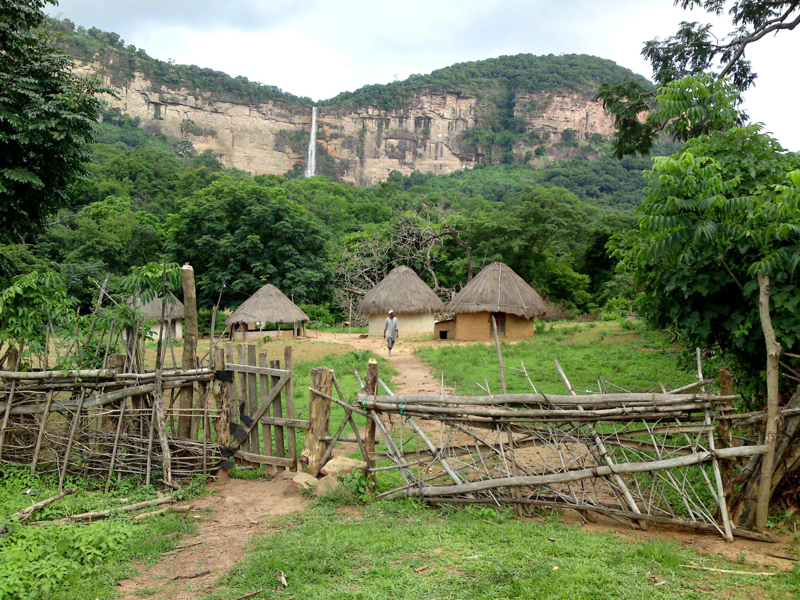

Demba Barry and Boubacar Bah
Demba Barry was from the region of Labé. His family came to eastern Gambia during the colonial period from the region of Labé in Guinea in search of greater economic success. They settled in Basse, the economic center of eastern Gambia and the capital of the Upper River Degion, Gambia’s easternmost political division. His family maintained his connections with Guinea, and he returned to Guinea to study the Koran.
Like many in the region, Demba has ties throughout the greater region. He went to Dakar, Senegal’s capital, to learn to be a tailor, staying with his brother who lived there. Other members of his family left Gambia for Sierra Leone in search of opportunity there. Additionally, his daughter married a Bissau-Guinean national, and currently resides in Guinea-Bissau.
Boubacar Ba’s father fled Guinea for Gambia because of the heavy taxes on agricultural products and on livestock herds. Like Demba, Boubacar was born in Gambia, but his father still sent him back to study the Koran in Guinea, even while Sekou Touré was still in power. His siblings born in Guinea remained there until the border was opened in 1978. When the border opened, he studied in the town of Koundara, located close to Guinea’s borders with Senegal and Guinea-Bissau. Upon the border opening, his siblings came to join the rest of the family in Gambia. As he put it, “Interactions began” between Guinea, Senegal, and Gambia then.
Boubacar also had experience with PAIGC troops fighting for independence. Koundara, where he studied the Koran, was the site of a PAIGC base, and so he interacted with troops there, including the famed military commander Osvaldo Vieira. He still has relatives in Guinea, and stays in contact with people there.
You know, I do not know much about Guinea because I did not stay there, I know here [Guinea-Bissau] better but about Guinea, people say that during Lansana Conte’s time the country was peaceful while Sékou Touré killed people or took them and locked them up.
Interview
You know, I do not know much about Guinea because I did not stay there, I know here [Guinea-Bissau] better but about Guinea, people say that during Lansana Conte’s time the country was peaceful while Sékou Touré killed people or took them and locked them up.
How did he tire people out?
He did not want people to go out of the country he wanted all them to stay and work in the country if you don’t want to do that he will send you in jail; or kill you and if you harvest after farming he will take all your food and say it’s the norm.
Did this make people leave?
It was part of the reason. If you had ten cows, you would have to give the government two. If you had 100 sacks of rice, you would have to give them 20 sacks. It was forced. If you farmed peanuts, you would give them to the government. Same if it was rice of goats or cows or livestock. It would all be given. It was a “norm.” If you not give them this, you were considered a counter-revolutionary and you would be in jail until you died, and they would take all your things. That’s how our father [an elder, not literally their father] was killed. There was a man near here, Sékou Touré made him leave. His government had a secret agency and the agents would go and tell the governor that the man over there, he does not like the government. If they saw a pretty woman in a house, they would tell her husband to come to the governor. They would say to the man, “Hello. How are you? Why do you dislike the government? If you don’t go to meetings; if the government did projects and you did not go. After that you had to flee; if you did not flee, you would lose your entire world. All Fulbe Futa [Fulbe from Futa Jallon] people who are here today [in Gambia], our fathers and grandfathers, it is because of Sékou Touré that they fled. They came to Senegal by foot. There were no cars. The major roads were locked, and the military would stop you at the border. You went by foot, but the popular militia searched for people, and they had guns. If they saw you, they would say stop, and if you did not stop, they would shoot at you. Many people died in the bush. People came to Senegal, Gambia, Mali, Côte d’Ivoire, Liberia, Sierra Leone, all of them. The Fulbe people left; that was what Sékou Touré’s government did. Sékou Touré himself, he was fine, but he was surrounded by bad people. Before he died, in 1978 he removed the borders and looked for relations with Africa. All of the borders opened, at this time I was studying in Koundara [in Guinea near the border with Senegal]. I saw motorcycles, you could not count how many were leaving Senegal from Guinea. There were so many vans and buses you could not count. At this time interactions began [between the countries] and we would go to each other. Now the world is more connected. But, now if I went to Guinea, I have my Gambian ID card. If I reach Guinea, I take out my ID card and I pay. But if you pay 5000 Guinean francs, I pay 20,000. If I ask why, because we are all part of ECOWAS [a West African regional organization], they say that is not the truth. You ask our people for permits to enter the country so if you come here you must pay. This is the problem today between Guinea and Gambia. But there is no problem with Senegal. If you leave Senegal nothing. If you go to Guinea, that is a problem. In Mali, there is the same problem. Guinea-Bissau also, we have no problem.
